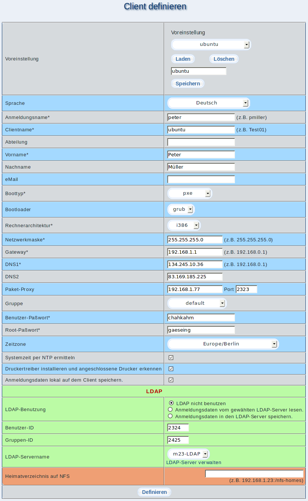

Die hier gemachten Voreinstellungen werden für alle Massen-Clients benutzt, die von diesem Musterclient abgeleitet werden.

Einige dieser Einstellungen können von Client zu Client variieren, diese können aus einer Datei eingelesen, per Hand eingegeben, automatisch generiert oder für alle beibehalten werden. Eine genaue Auswahl über die Art der Erstellung treffen Sie bei beim Durchführen einer ''Massen-Installation''.
dodger
2014-08-06